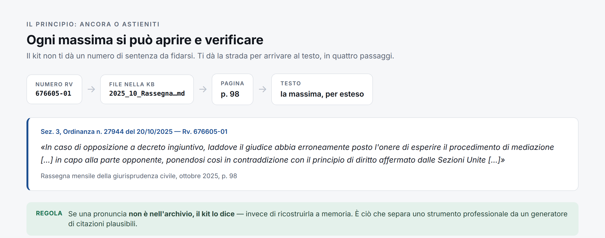
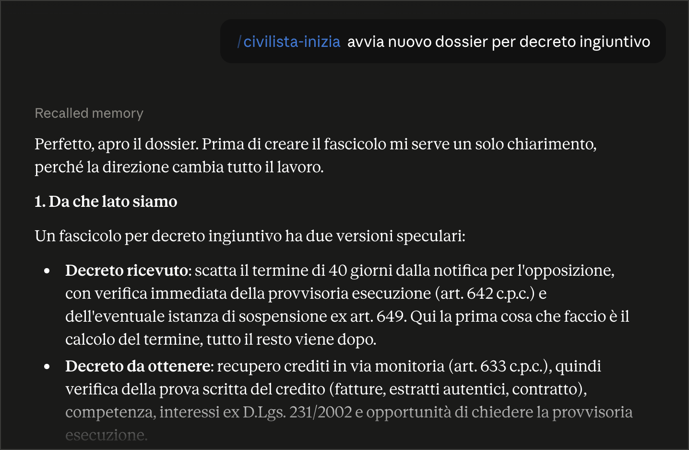

Un assistente per lo studio civile che non inventa giurisprudenza: ogni sentenza che cita si apre, si legge e si verifica prima di finire in un atto.
E con la giurisprudenza inventano benissimo: numero plausibile, sezione plausibile, massima scritta meglio dell'originale. Non è teoria — la Cassazione ha già sanzionato la citazione di precedenti inesistenti in un ricorso.
Questo kit parte da lì. La regola è una sola: non si cita ciò che non si può mostrare.

Non risponde subito per sembrare veloce. Prima capisce da che lato si sta, poi calcola i termini, poi ragiona sul merito — nell'ordine in cui le cose contano davvero.

I quaranta giorni per opporsi, i sessanta più centottanta del licenziamento, i termini a ritroso dove la scadenza di sabato si anticipa invece di prorogarsi. Sempre con il ragionamento in chiaro.
Che la domanda di mediazione non sospende i termini di decadenza. Che le cause di lavoro non si fermano ad agosto. Sono gli errori che chiudono una causa prima di aprirla.
Danno, interessi, rivalutazione, nota spese e rischio di soccombenza: il conto reale, per il parere scritto al cliente, prima di decidere se conviene agire.
Quasi tutte le difficoltà dei primi giorni nascono dallo stesso equivoco: l'interfaccia mette vicine tre cose che si assomigliano e si comportano in modo opposto — la conversazione, che dura quanto la chat; la cartella di lavoro collegata, che è il disco dello studio; e il Progetto, che non è dove vivono i fascicoli.
I documenti di una causa si copiano in FASCICOLI/<caso>/, non si trascinano nella chat: da lì non tornano indietro. I dati dei clienti restano sul tuo computer.
Si apre con «lavoriamo sul fascicolo [nome]» e si chiude con «aggiorna il fascicolo e lo scadenziario». La memoria sta nella cartella, non nella chat.
Metti i tuoi atti già depositati in MODELLI/: il kit ne segue struttura, ordine e formule, e dichiara su quale si è basato. Dai modelli prende la forma, mai i fatti.
Decreto ingiuntivo e opposizione, diritto del lavoro, diritto di famiglia — con competenze dedicate. Poi contratti, responsabilità civile e danni, locazioni e condominio.
Serve l'app Claude sul computer. Non si scrive codice: si incolla un nome, si clicca due volte, si scarica una cartella.
Nell'app Claude: Personalizza → + → Crea plugin → Aggiungi marketplace, e incolla Synthos-Logic/civilista-italia. Poi Sincronizza e il + sulla scheda del kit.
Sul progetto GitHub: Code → Download ZIP. Rinomina la cartella in Civile-Italia e collegala a Cowork. I tuoi fascicoli restano sul tuo computer.
In una conversazione con la cartella collegata, scrivi «Aggiorna la banca dati della giurisprudenza». Da lì in poi si aggiorna da sola ogni lunedì. Nessun account GitHub richiesto.
Guida completa passo passo, con cosa fare se qualcosa non torna: docs/INSTALLAZIONE.md.
Il kit è alla prima uscita sul campo. Se lo usi su un fascicolo vero e qualcosa non torna — un termine, una regola, una citazione che non trovi — apri una segnalazione. Il gemello penale è arrivato dov'è esattamente così.